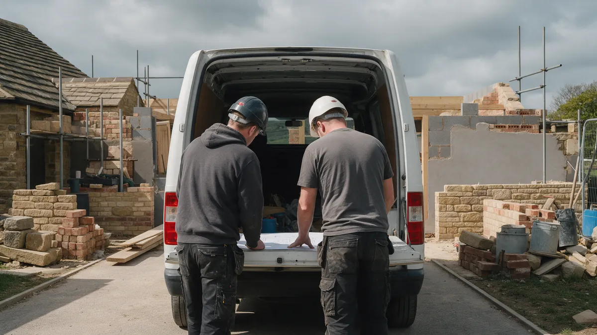

About
A small firm that finishes things.
Quarrigg does not exist. If it did, this is the firm it would be: a handful of people who do the structural work themselves and keep the trades behind them in order.

Generated photoHow we work
One job at a time
The thing people complain about most is not price, it is a builder who starts, disappears for a fortnight to another job, and comes back when the weather turns. So the rule here is one main job at a time, with a start date we actually mean.
We do the shell and the structure ourselves: footings, drains, walls, steels, openings, roof structure and making good. Electrics, plumbing, plastering, joinery and decorating come from people we use regularly and book in behind us.
We put things in writing. The quote says what is included and what is not. If something changes once the ground is open, it gets agreed and written down before it gets built.
What we will not do
Being straight about it
- We will not price an extension off a photograph.
- We will not tell you planning is a formality. Nobody knows that.
- We will not take a wall out on a guess. The beam gets designed.
- We will not point an old stone wall in hard cement because it is quicker.
- We will not take a job on if the honest answer is that it is not our sort of work.
Who you would deal with
The team
Made up people for a made up firm.
Alan Sample
Runs the jobs and does the quoting. On site most days, which is why he picks up at seven and not at two.
Ravi Sample
Bricklayer. Does the stonework and the pointing, and will talk about mortar for longer than you want.
Kate Sample
Looks after the office: quotes out, building control booked, and the thing you rang about last week chased up.
Straight answers
About the demo
Is Quarrigg a real company?
No. The name, the people, the reviews and the jobs are all made up for this demo. The phone number is from the range Ofcom keeps for television and film, so it rings nobody. The pictures were generated for this demo and are not real jobs.
Why build a fake builder's website?
Because it is easier to show a builder what a good site does than to describe it. Everything here works the way it would on a real one: the quote form, the chat box, the pages for each job and each town.
What would be different on a real site?
Real photographs of real jobs, real reviews, real names, and whatever the firm genuinely holds by way of cover and qualifications. Nothing here claims any of that, because there is nothing to claim.
Who built it?
Clockwork AI. If you want one like this for your own firm, the number is in the bar at the top of the page, and it is Clockwork's number, not Quarrigg's.
Want to talk to us about your job?
Tell us roughly what you have in mind and where you are. We will come and look.